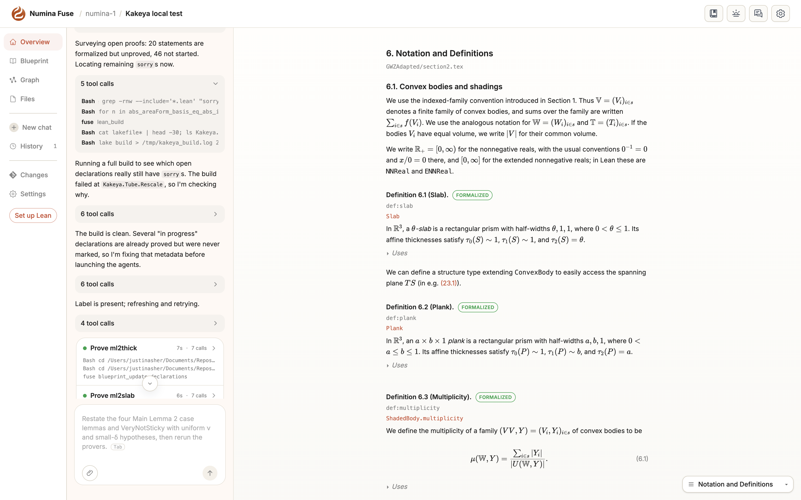
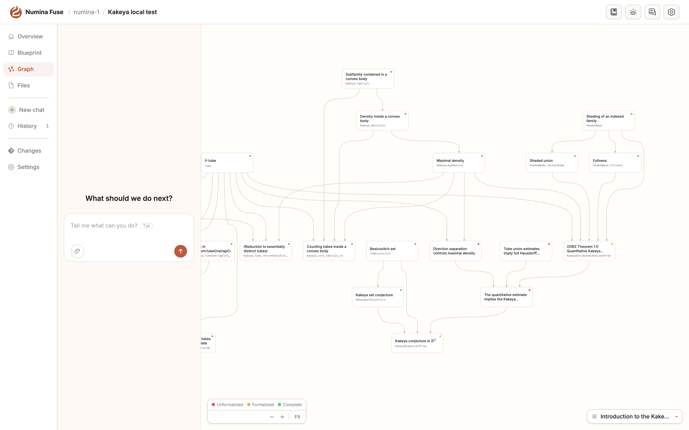

Builds an agent-based application for autoformalization of mathematics in Lean 4 with blueprints, and evaluates LLM prover models on Lean lemmas.
Abstract
Numina Fuse is an agent-native application for formalizing mathematics in Lean 4. Since Lean can compile while not representing its intended informal meaning, and agents now write Lean faster than people can read it, we built Fuse around human supervision of agent work. A user works with an AI orchestrator on a Lean project and supervises it through views of the blueprint, the dependency graph, and the Lean code, while the backend keeps the project's derived state and runs agents for hours without the user present. We describe the development of Fuse throughout 2026, as it moved from a prescribed pipeline of agents paced by human review to an orchestrator that dispatches specialists, provers, and parallel children on its own. We designed for this shift, keeping project state, tooling, and interface design separate from orchestration so that agents could take over more of the work as models improved. We report Fuse's use in a formalization of the three-dimensional Kakeya conjecture and a study of prover models. We close with lessons for the next generation of autoformalization systems. Fuse Desktop, an open-source local version, is available at https://github.com/project-numina/fuse-desktop.
Problem
Lean code can compile without faithfully representing its intended informal mathematics, and AI agents now write Lean faster than humans can review it. Large formalization projects need humans to supervise agent work on faithfulness, reuse, and drift.
Approach
Numina Fuse is an agent-native web application built on GitHub-hosted Lean and leanblueprint projects. A user works with an AI orchestrator (Claude Code or Codex sessions) that dispatches specialist, prover, and child-orchestrator agents through MCP tool servers for blueprints, builds, the Lean LSP, Mathlib search, and source papers. The backend caches the project's derived state and runs sessions persistently. Project state and tooling are kept separate from orchestration, so the orchestration evolved from a fixed human-paced pipeline to autonomous dispatch as models improved.

Figure 2: Fuse Desktop ( https://github.com/project-numina/fuse-desktop ), the open-source local version, on the Kakeya formalization. Left: the chat with the orchestrator, which narrates its plan, groups its tool calls, and shows provers running as Claude Code subagents ( Prove ml2thick , Prove ml2slab ). Right: the rendered blueprint, with each definition’s label, linked Lean declaration, and fo

Figure 9: The dependency graph in Fuse Desktop, colored by declaration status (unformalized, formalized, complete), with each node showing its linked Lean declaration.
Results
Fuse was used for much of a formalization of the three-dimensional Kakeya conjecture, where human reviewers caught statement errors introduced by agents. In a study of seven prover models on 52 lemmas, all solved 45–52, while cost per solved lemma varied by more than an order of magnitude. This motivated routing proof search to inexpensive models while a frontier model orchestrates.
Model
Solved
Hard (of 13)
$ per solved lemma
Doubao Seed 2.1 Turbo
52/52
13
0.080
Claude Sonnet 4.6
51/52
12
0.421
Claude Opus 4.8
49/52
12
0.526
DeepSeek V4 Flash
47/52
10
0.041
DeepSeek V4 Pro
45/52
10
0.218
Prover models on 52 lemmas, one attempt each (selected rows)